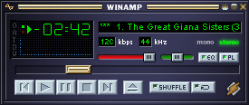
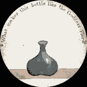
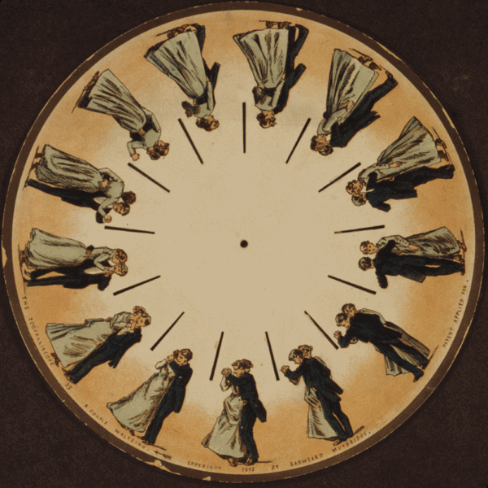
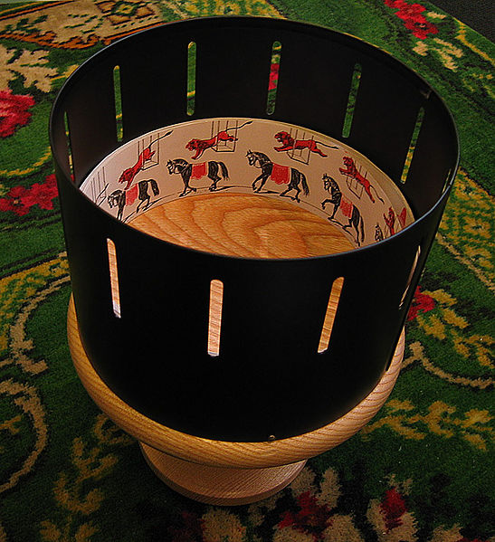
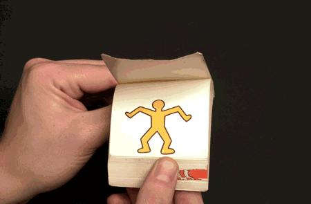
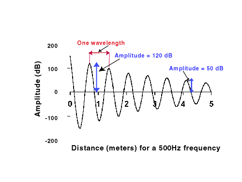

Hello
I'm Ruth
Work in The Lab at o2
UX, Design, Front End Dev
@rumyra
Happy Birthday To Me!
It was my birthday yesterday
Not the reason I want to make my browser dance
But I to go a little off piste - highlight my age
I turned 32
Reason to tell you this is because my story starts back when I was at uni - unless u knew my age u wouldn't know how long ago that was - it was over ten years ago, to me that's quite a long time
So let's get a little nostagic
Not gonna try and guess your age
However I'm gonna assume you've seen this
Winamp

Winamp was the mp3 player of choice - still available
We're talking back when Napster was illegal
What I really wanted to focus on is the visualizer
Cool
My name is Ruth and I am a VJ
(No not a DJ)
“VJing is a broad designation for realtime visual performance” - Wikipedia
This was pretty influencial as one other thing I did at uni was to VJ
Basically we projected pretty animations in music venues, clubs, bars etc...
Used a piece of software called Visual Jockey
One of the cool things took a line in of the sound - band, dj - detected frequencies. Beat, bass - manipulated parts of animation based on this.
Much like the winamp visualiser.
Get to the point already!
CSS Animations
Web Audio API (+ others)
Can we recreate my old uni days?
So by now you may see where I'm going with this
For the past ten years I've bene engrossed with designing website layouts, more recently apps - all pretty static, coding html & css, I had left my VJing days behind.
Then we got CSS animations
And a web audio API
Suddenly I thoguht to myself - is it now possible - let's find out
Two things
Moving visual
Sound wave
Let's do a proof of concept
Let's keep the first iteration simple - let's see if it's possible
My minimum requirements are:
Moving visual - an animation if you will
Sound wave - which I can detect frequencies from
Let's start with the moving visual - for this I want to use CSS animations.
Mention SVG & Canvas & CSS transitions
SVG - some animatable
Canvas - Just like the idea of CSS animations
CSS transitions - not as much control
The Briefest History of Animation
Animation is old
Cave paintings showed animals with multiple leg positions - debatable but probably to show motion
Artifacts have been recovered from both Egypt and Iran depicting sucessive images which as you can see show motion.
If you're wondering - this is known to be soldiers wrestling
19th Century
Thaumatrope (1824)

Thaumatrope - disc with string, wound up and spun - 2 images or frames
19th Century
Phenakistoscope (1831)

Phenakistrope - disk with more images, slits in disk - held in front of a mirror and spun whilst looking through slits
19th Century
Zoetrope (1834)

Photo by Andrew Dunn, http://andrewdunnphoto.com
Zoetrope - like Phenakistrope just in a bowl like cylinder
19th Century
Flipbooks (1868)

Keith Haring Flip-Book, http://www.haring.com/
20th Century
Celluloid
Cartoons
Stop Motion
Computer / 3D / CGI
Cellyloid - invented in the 19th century but popular in early 20th - upraising of cameras.
Early cartoons drawings on papar that were photographed
Let's not forget Stop Motion animation - most famous Wallace & Gromit
All these methods rely on frames
Frames
Everything is frame based
Keyframes & tweening
EXPLAIN KEYFRAMES AND TWEENING
All digital animation is based upon this - flash, photoshop gifs, video editing, 3D animation.
And so is CSS animation
Like this: Show ball
Keyframe at top
When bounces
back up
Let's look at the code behind this
Creating CSS animation
@keyframes bouncingBall {
0% {top:-200px;}
50% {top:100px;}
100% {top:-100px;}
}
@keyframes fadeIn {
from {opacity:0;}
to {opacity:1;}
}
List of animatable properties: http://oli.jp/2010/css-animatable-properties/
Use vendor prefixes!
Declare animation using @keyframe directive
Can use percentages or just from too
Lots of animatable propertie - fonts, borders, backgrounds, prositioning
List
Calling your animation
.ball {animation : bouncingBall 2s infinite ease-out;}
.ball {
animation-name: bouncingBall;
animation-duration: 2s; /*Can be ms*/
animation-iteration-count: infinite; /*Or integer*/
animation-direction: normal; /*normal, alternate*/
animation-timing-function: ease-out; /*ease, ease-out, ease-in, ease-in-out, linear, cubic-bezier(x1, y1, x2, y2)*/
animation-fill-mode: forwards; /*forwards, backwards, both, none*/
animation-delay: 0s; /*Can be ms*/
}
Elements can have multiple animations, just comma separate list
Again vendor prefixes!
simple as adding animation property
Can declare each property separetely
Can have more than one animation on an element
Go Mad
Tie in new 3D stuff
Listen to your computer take off!
Briefest Intro to Sound

Image by University of Utah, http://gslc.genetics.utah.edu
Not gonna insult your intelligence by standing here with a springy like a GCSE science lesson, saying look this is how sound works!
Travels through the air compressing and expanding areas or particles
This can be illustrated by drawing a wave
SHOW
This is a sin wave - in sound there are different shapes, square, triangle, sawtooth
Why do we care?
This is what we want to detect - so we can get info like frequency & volume.
Web Audio API
Create new instance
var myAudioContext = new webkitAudioContext();
Did I mention prefixing?
Either load into a node via an http request
Or create audio element
Web Audio API
Load audio
HTTP request
audio element & createMediaElementSource method
//get audio element
var audioElement = document.getElementById('elementID');
//create source
var sourceNode = myAudioContext.createMediaElementSource(mediaElement);
//connect source to destination (speakers)
sourceNode.connect(myAudioContext.destination);
Now we have a instance there are lots of things we can do
Firstly loading audio
Do this either with HTTP request or audio element
Audio element is simpler and no decode needed
Go through code
Web Audio API
Lots of manipulations
Change volume: myAudioContext.createGain();
Create filters: myAudioContext.createBiquadFilter();
Create sound: myAudioContext.createOscillator;
Things you can do
Basic things like start & stop functionality
Change the volume
Create filters
Can even create your own sound rather than loading
THE O'REILLY BOOK IS FREE!
Web Audio API
createAnalyser();
Frequency data: getFloatFrequencyData or getByteFrequencyData
Time data: getByteTimeDomainData
You can analyse an audio context using the web audio api by calling the 'createAnlyser' method
That then gives you methods for frequency and time data - brilliant just what we need
Whoop we did it - we can take a sound wave, get some data from it and use that to manipulate visuals - all in a browser.
Other Web API's
Clubs & Venues :( Dark Cause problems with projecting
They have their own lights - interfear with projector
Wouldn't it be nice if we could detect the ambient light
Other params (ambient light)
Detecting Audio
Difficult: Audio API needs audio loaded into it
Enter GetUserMedia
Jiggery Pokery: Detect what the mic is picking up and pass that back into the Audio API
Doing it wrong - we're not the ones loading the audio. We want to detect it.
Actually quite difficult - we really want the Audio API to detect a line in - it doesn't - doesn't even detect mic.
Enter GetUserMedia - now we can detect the mic.
Would luv it to detect line out.
Thank you
@rumyra
http://rumyra.github.io/make-your-browser-dance
If you had said to me 10 years ago, that I could do what i was doing then, on a laptop, in a browser, using just code. I wouldn't have laughed at you - I probbaly would have cried a little. Yet I'm standing here doing excaltly that.
Thank you very much for reminising with me and sharing my journey - I hope you've enjoyed it as much as I have.
Web apis can do - it's just about to kick off - I would get on the train before it does :)